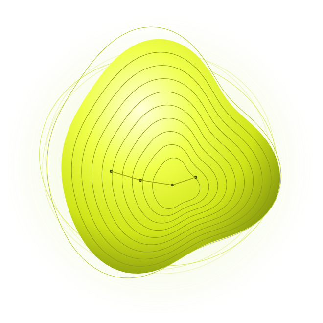

Neugierمحصولات دیجیتال
با ذهن خودشان.
ابزارهایی برای کار با متن، صدا، تصویر و داده. ساختهشده برای آدمهای کنجکاو.
↙ساختهشده برای کنجکاوی، همراهِ کار روزانه.
(26+)
یک میز کار برای ایدهها، دادهها و آن سؤال بعدی که هنوز نپرسیدهای.
 انتخاب این قالب
انتخاب این قالب